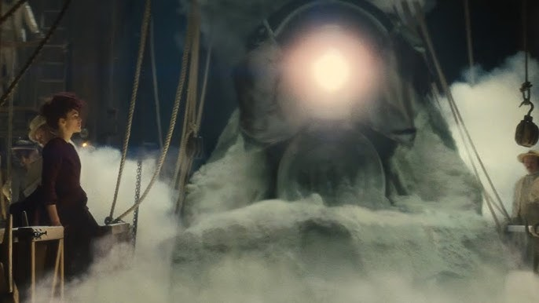
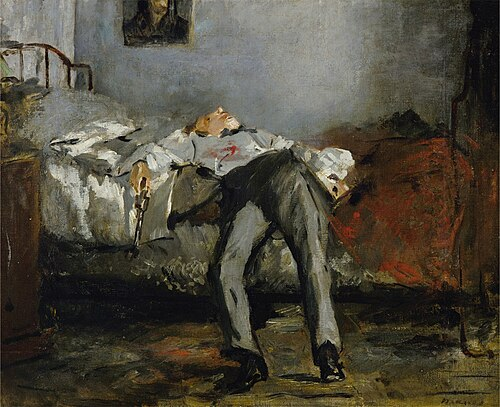

Suicide

The context of suicide focuses specifically on its presence in Russian society and the literary responses to it, as well as examining the sources from which society’s attitudes toward this phenomenon arose.
Starting in the 1860s, soon after the great reforms, Russia was hit by an epidemic of suicide, marked by a dramatic rise in suicide rates recorded in the press (Paperno 3). In fact, papers exclusively covered upper-class or urban suicides, with commoner suicides so common that they weren’t even taken into account (76). It’s important to note, however, that it’s difficult to ascertain the extent to which suicides actually rose, as the great reforms, in transferring documentation of suicide from the church to secular institutions, meant that they were recorded far more reliably (55). In general, systematic efforts to record suicides only began after the reforms (70)—yet this didn’t stop experts and common folk alike from treating the perceived epidemic as such (73). A moral panic arose, as many attributed the rise in suicide to the “disintegration of the social and moral order” (45). Of particular blame was the rise of nihilism as a philosophy, which in discourse was largely used interchangeably with atheism, since from the perspective of a Christian society, those who lacked belief in God were perceived as lacking meaning in life. One writer, Meschersky, wrote that “a society without religion is a body without a soul—a suicide’s body in a state of (self)-decomposition” (83). This imagery of the body in relation to suicide was incredibly common, in no small part due to the association created between the two by the news, which would report on the state of suicides’ bodies with a precision that befits a medical report—in one instance, they even reported the exact number of cervical vertebrae remaining in a severed head. Tolstoy continues the typical literary interpretation of suicide, treating it as a symptom of a broader ideological and moral crisis. The famous epigraph “vengeance is mine; and I shall repay” (Tolstoy 1) appears fulfilled when Anna dies, punishing her for her breach of morals. While critics have made compelling cases that Tolstoy instead blames the hypocritical society who condemns Anna instead (Morson 57), Tolstoy himself sponsored the divine punishment interpretation, writing that the epilogue was intended “to explain the idea that the bad things man does have as their consequence all the bitter things that come not from people, but from God, and that is what Anna Karenina experienced” (Morson 128). Hence, Tolstoy’s model of suicide subscribes to the moral decay model of suicide. However, Tolstoy did not rely solely on a moralistic interpretation; he also included elements of naturalistic explanations; namely, mental illness. Anna is clearly out of her mind during her suicide attempt with erratic thoughts, and most notably, we see a clear shift to her regular mental state just before she is run over by the train, as she confusedly asks: “Where am I? What am I doing? Why?” (Tolstoy 771). Tolstoy also continues the focus on the body of a suicide, as Vronsky vividly remembers Anna’s dismembered body. Just as doctors strove to find the cause of death in a suicide’s body, Anna’s body reflects her sin, “stretched out shamelessly among strangers” (Tolstoy 785). This also supports the idea that Anna was punished with her suicide, as even in death, she is still shamed for her exhibitionist air, just as she was in society. Interestingly, as revealed in a letter by Tolstoy (written in 1898 but still relevant), he expresses an incredibly broad definition of what counts as suicide (more accurately: killing oneself). Whereas Church authorities had fairly large definitions themselves, which nobody today would consider an effort to kill oneself but rather accidental death, including dying while playing in the water, or falling down a swing (Paperno 51–2), Tolstoy’s list includes one notable addition exempted from those other lists, such as killing oneself in duels or war. The specification of these mediums implies that Tolstoy perceives the very act of going to war as a method of taking one’s life, which is corroborated by his pacifism and his depiction of the men on the train to Serbia, where the cheerful ones are described as ignorant, and where Vronsky explicitly intends to die. In this sense, Tolstoy diverges from the zeitgeist, even though he otherwise frequently converges with it. Vronsky’s efforts to kill himself are a particularly interesting case study, as in addition to the two most explicit instances—shooting himself and his departure for the Serbian war—he also seeks death in another war by departing for Tashkent when he learns he can’t see Anna. Vronsky’s first attempt by shooting mirrors Anna’s in a seeming agglomeration of self-inflicted moral retribution over his guilt, as well as naturalistic delirium due to his inability to sleep. However, his more prolonged attempts at death-seeking through wars raise deeper questions, as they cannot be the object of simple delirium, being far more thought out. Instead, they mirror in a way Levin’s pondering on suicide and Tolstoy’s own, being more prolonged processes spurred by depression. However, while Levin and Tolstoy recover due to finding God and acquiring a stable moral system of their own, Vronsky (to our knowledge) never does such a thing, and is therefore presumably killed in Serbia. Hence, his death is purely morally motivated.
Works Cited
- Paperno, Irina. Suicide as a Cultural Institution in Dostoevsky's Russia. Cornell University Press, 1997.
- Tolstoy, Leo. "Letter on Suicide." 1898. https://www.marxists.org/archive/tolstoy/1898/tolstoy-on-suicide.html.